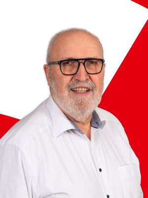
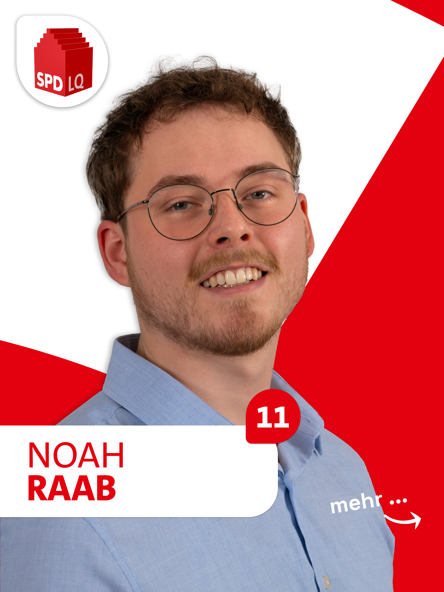
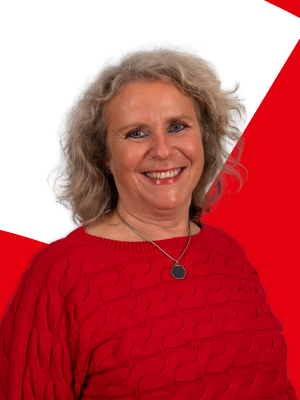
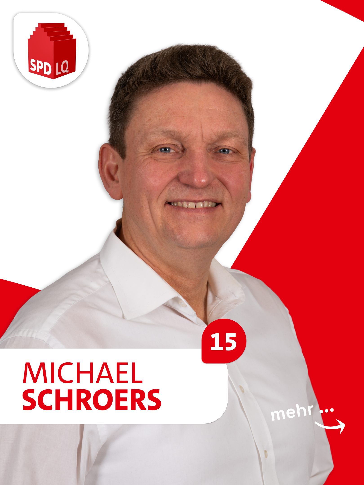
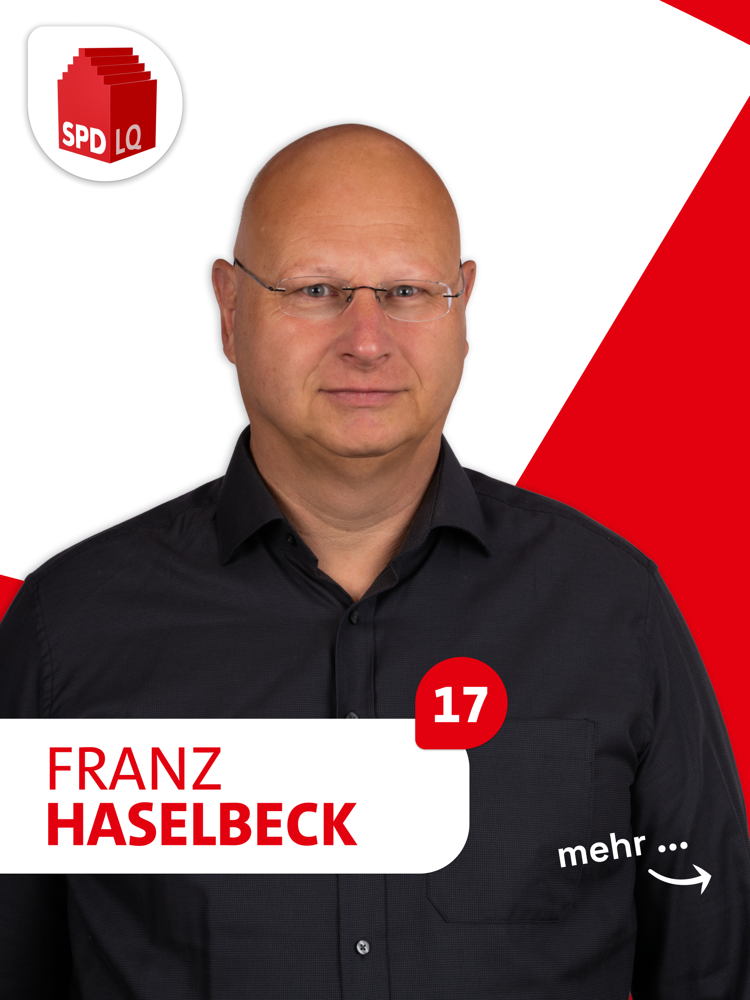
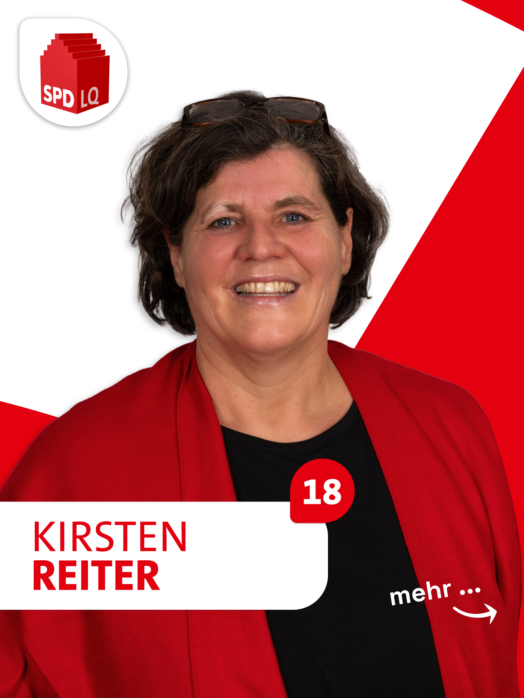
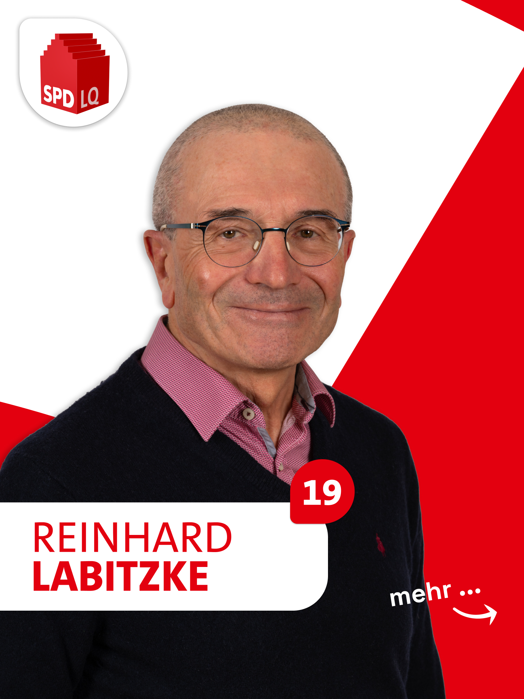
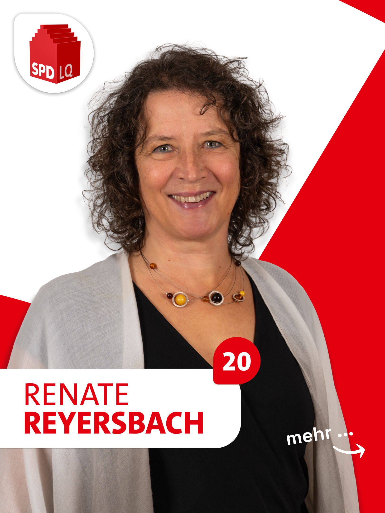

Unsere Kandidat:innen
Herzlich willkommen! Hier stellen wir Ihnen die Kandidatinnen und Kandidaten der SPD Langquaid vor. Engagierte Menschen aus unserer Mitte, die sich für eine soziale, gerechte und zukunftsfähige Gemeinde einsetzen. Lernen Sie unsere Kandidat:innen kennen und erfahren Sie mehr über ihre Ziele und Visionen.
Lernen Sie uns kennen

Bernd Schmargendorf
70 Jahre, Rentner, Leiter der VHS Langquaid e.V.
Ulrike Diermeier
60 Jahre, Dipl. Sozialpädagogin (FH)
Gerhard Böckl
58 Jahre, Rettungsassistent, Gemeinderat
Nicole Nagel
50 Jahre, Freiberuflerin, Gründerin CleanUp Langquaid
Robert Mehrl
62 Jahre, Chemietechniker, Gemeinderat
Fadime Gök
58 Jahre, Imbissbetreiberin
Heiner Bartl
50 Jahre, freigest. Betriebsrat EVG
Anke Veit
55 Jahre, Zahntechnikerin
Valentin Reiter
34 Jahre, Mediengestalter
Anna Reyersbach
21 Jahre, KfZ-Mechatronikerin, BOS-Schülerin

Noah Raab
23 Jahre, Meister Garten- und Landschaftsbau
Michaela Forge
62 Jahre, Dipl. Pädagogin, Sprachtherapeutin
Ulrich Buchhauser
47 Jahre, Leiter Landesagentur Energie & Klimaschutz

Anita Singer
62 Jahre, Fachlehrerin für Physiotherapie

Michael Schroers
56 Jahre, Angestellter
Uschi Tröger
62 Jahre, Assistentin der Sprachtherapie

Franz Haselbeck
58 Jahre, Landwirt, Naturland

Kirsten Reiter
57 Jahre, Erzieherin, SPD-Ortsvorsitzende

Reinhard Labitzke
69 Jahre, Pensionist, TSV Radsport

Renate Reyersbach
60 Jahre, Psychol. Psychotherapeutin